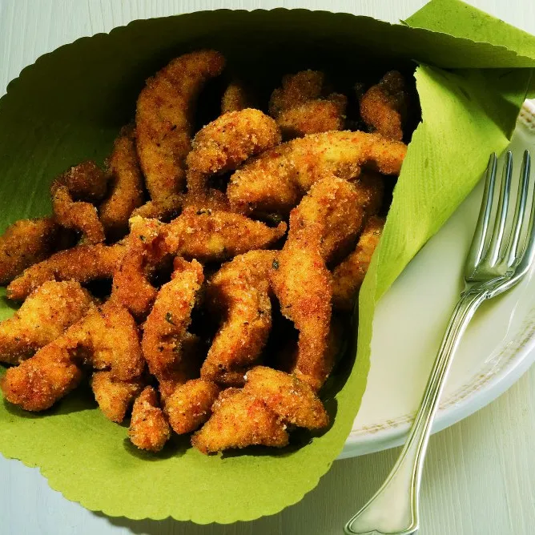

Straccetti di pollo croccante

Irresistibili per i bambini, golosi per i più grandi: scoprite la nostra ricetta per preparare gli straccetti di pollo croccanti, un piatto che andrà a ruba
Ingredienti
- 450g polpa di pollo
- 200g pangrattato
- 10 rametti di timo
- 2 uova
- Tabasco
- paprica o altre spezie a piacere tipo tandoori
- farina
- olio di arachidi
- sale
Procedimento
- Per preparare gli straccetti di pollo croccante riducete la polpa di pollo in bastoncini (straccetti). Raccoglieteli in una ciotola e massaggiateli con la paprica (o le altre spezie) per farla aderire uniformemente. Sigillate la ciotola con la pellicola e lasciate che gli straccetti si insaporiscano per 10-12'.
- Intanto battete le uova con due cucchiai di acqua, uno di Tabasco e le foglioline di timo tritate. Passate gli straccetti di pollo nella farina, scrollateli per eliminare quella in eccesso, poi immergeteli nelle uova battute, scolateli e passateli nel pangrattato.
- Friggete gli straccetti in abbondante olio portato a 170 °C fino a completa doratura (ci vorranno 4-5'). Scolateli su carta da cucina, spolverizzateli di sale e serviteli subito.
Home